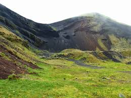
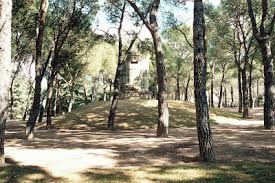
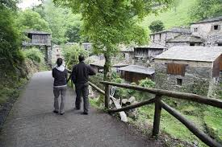
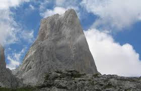
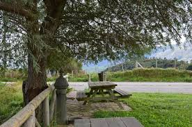

Estas interesantes rutas nos van a permitir realizar excursiones de nivel medio, al alcance de senderista de todas las edades con un mínimo de preparación física. Podremos acercarnos a la costa en algunas ocasiones, visitar monumentos históricos, conocer tradiciones de nuestra isla, arquitectura gastronomía y artesanía. Suelen ser recorridos para hacer en un dia, pero existe la posibilidad de alojarnos en los refugios habilitados para ello en diferentes puntos de la Serra, previamente conviene hacer la reserva, sobre todo en la temporada de otoño-invierno.
    | ETAPAS MAS INTERESANTES | TIEMPO DEL RECORRIDO Y LONGITUD | DESNIVEL |
| Tossals Verds - Son Amer | 5 h 35 min - 15.131 m | 869 m |
| Son Amer - Pont Romà | 4 h 45 min - 16.745 m | 677 m |
| Castell d´Alaró | 5 h 30 min - 18.015 m | 795 m |